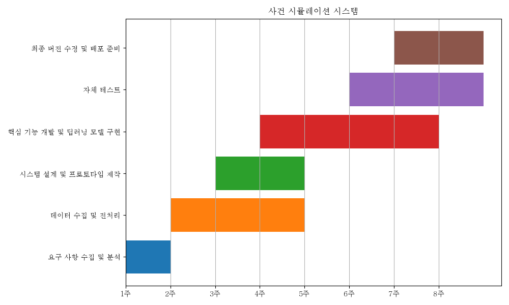

Project Title#
사건 시뮬레이션 시스템
_Prepared by: 이규범 202221014
Table of Contents#
Project Title
Table of Contents
1. Executive Summary
2. Background
3. Objectives
4. Scope
5. Software Process Model
6. Budget
7. System Architecture
8. Risks Assessment
9. Resources
10. Technical Specifications
11. Timeline and Deliverables
12. Conclusion
1. Executive Summary#
본 기획서는 창작 분야에서 AI의 힘을 이용하여 창작 과정을 혁신하려는 “사건 시뮬레이션 시스템”의 전반적인 개요와 방향성을 제시한다. 이 시스템은 창작자나 개발자가 제공하는 캐릭터와 배경 정보를 기반으로, 최신 딥러닝 기술을 활용하여 사건과 캐릭터를 생성하며, 이를 시뮬레이션한다. 또한, 시스템은 심리학적 요소를 통합하여 현실감 있는 캐릭터와 사건을 제안, 창작자의 스토리 작성을 효과적으로 지원한다. 이를 통해 사람들은 시나리오를 빠르게 시뮬레이션해볼 수 있다.
2. Background#
창작 분야는 지속적으로 새로운 콘텐츠를 요구하며, 그 과정은 종종 복잡하고 시간 소모적이다. 전통적인 창작 과정에서는 스토리를 구상하고, 이를 수정 및 개선하는 데 많은 시간과 노력이 소요되었다. 특히, 창작자들은 수없이 많은 아이디어 중 최적의 시나리오를 찾아내기 위해 다양한 방향성을 탐색해야 한다.
최근에는 AI와 딥러닝 기술의 발전으로 이러한 창작 과정에 혁신이 기대되고 있다. AI는 대규모 데이터를 분석하고 패턴을 학습하는 능력을 가지고 있어, 창작자의 초기 아이디어나 컨셉을 바탕으로 다양한 시나리오나 사건을 빠르게 생성할 수 있다. 또한, 딥러닝은 복잡한 인간의 감정이나 심리를 모델링할 수 있어, 더 현실감 있는 캐릭터와 사건을 창작하는데 기여할 수 있다.
현재 창작 분야에서의 주요 어려움은 아래와 같다.
다양성의 부족: 동일한 테마나 구조에 기반한 스토리가 반복되는 경향이 있다.
시간 및 노력의 문제: 최적의 스토리나 콘텐츠를 창출하기 위해 다양한 시나리오를 수작업으로 탐색해야 한다.
현실감의 부족: 캐릭터나 사건의 심리적, 사회적 배경을 깊게 파악하고 이를 반영하기가 어렵다.
AI와 딥러닝 기술을 활용하여 창작 과정을 지원하고, 다양한 스토리 브랜칭 및 캐릭터 개발을 자동화하는 것은 창작자의 업무 효율성을 극대화하고, 콘텐츠의 질을 향상시킨다.
3. Objectives#
3.1. 사용자의 입력 정보를 기반으로 한 효율적이고 정확한 사건 시뮬레이션 제공#
Specific: 사용자가 제공하는 입력 정보를 바탕으로, 90% 이상의 정확도로 사건을 시뮬레이션한다.
Measurable: 시뮬레이션의 정확도는 사용자 피드백 및 전문가 검토를 통해 측정된다.
Achievable: TensorFlow 및 Keras 라이브러리를 활용한 딥러닝 모델을 개발하여 목표를 달성한다.
Relevant: 창작자들의 요구사항에 맞는 시뮬레이션을 제공하여 그들의 작업 효율성을 높인다.
Time-Bound: 6주 내에 해당 목표를 달성하는 시스템의 초기 버전을 완성한다.
3.2. 심리학적 요소를 반영한 캐릭터 개발 도구 제공#
Specific: 캐릭터의 심리적 특성을 분석하여 5가지 주요 심리학적 특징을 자동 생성한다.
Measurable: 생성된 심리학적 특징의 정확성은 심리학 전문가의 평가를 통해 검증된다.
Achievable: 현대 심리학의 연구를 바탕으로 모델을 구축하고 학습한다.
Relevant: 창작자들이 캐릭터의 깊은 내면을 이해하고 스토리에 반영할 수 있도록 지원한다.
Time-Bound: 4주 내에 해당 도구의 프로토타입을 개발한다.
4. Scope#
“사건 시뮬레이션 시스템”은 아래와 같은 기능들을 제공한다.
사건 및 캐릭터 자동 생성: 사용자가 입력한 데이터를 기반으로 AI가 사건과 캐릭터를 자동으로 생성한다. 이 과정은 창작자의 작업 부담을 줄이고, 창의적인 아이디어 제공을 지원한다.
심리학적 요소 반영: 캐릭터 개발 도구는 심리학적 요소를 반영하여 더 실제감 있는 캐릭터를 생성한다. 심리학자와의 협업을 통해 구축된 데이터베이스를 활용하여 이를 실현한다.
이야기 브랜칭 제안: AI는 제안된 사건과 캐릭터를 바탕으로 다양한 스토리 라인과 브랜치를 제안한다. 이를 통해 창작자는 더 다양한 스토리를 개발할 수 있다.
Limitations:
리소스: 현재 프로젝트는 한 명의 개발자와 한정된 하드웨어 리소스로 진행되고 있다. 이로 인해 프로젝트의 진행 속도와 기능 개발에 제약이 있을 수 있다.
시간: 주어진 시간 내에 프로토타입을 완성하는 것이 목표이므로, 일부 고급 기능은 초기 버전에서 누락될 수 있다.
기술: 현재 사용 가능한 AI와 딥러닝 기술의 한계로 인해, 100% 정확한 사건 시뮬레이션과 캐릭터 생성이 어려울 수 있다.
데이터 접근성: LLM 기술을 효과적으로 활용하기 위해 필요한 다양한 데이터(다른 게임, 영화 등의 스토리)의 접근 및 확보가 어렵다. 저작권 문제나 데이터 소스의 제한으로 인해 특정 데이터를 사용하는데 제약이 있을 수 있다.
5. Software Process Model#
모델 선택: Agile + Scrum
선택 이유 및 정당화#
빠른 변화에 대응: 현대의 소프트웨어 개발 환경은 빠르게 변하고 있다. 특히, AI와 딥러닝 기반의 프로젝트는 초기 요구사항이나 목표가 프로젝트 진행 중 변경될 가능성이 높다. Agile + Scrum 방법론은 이러한 변화를 포용하며, 개발 중에도 요구사항의 변화나 추가 요청을 수용할 수 있는 구조를 가지고 있다.
지속적인 피드백: Scrum 방식에서는 주기적인 스프린트 리뷰와 회고를 통해 팀원 간의 통신과 고객의 피드백을 지속적으로 받을 수 있다. 이를 통해 프로젝트의 방향성을 지속적으로 조절하며 효과적인 결과물을 도출하는 데 도움이 된다.
적은 리소스로 최대의 결과물: “사건 시뮬레이션 시스템” 프로젝트는 한정된 리소스와 시간 내에 진행되어야 한다. Agile 방식은 최우선 순위의 작업부터 진행하며, 각 스프린트마다 가치 있는 결과물을 제공하도록 설계되어 있어, 한정된 리소스로도 최대의 성과를 달성할 수 있게 해줍니다.
투명성 및 계획성: Scrum 방식은 일일 스크럼 미팅을 통해 프로젝트의 진행 상황을 팀원 모두에게 투명하게 공유한다. 이를 통해 각 팀원의 작업 진행 상황과 장애물, 그리고 다음 단계의 작업 계획을 명확하게 파악할 수 있다.
유연성: Agile + Scrum은 반복적인 개발 사이클을 가지고 있어, 각 스프린트마다 개선 사항이나 변경 요청을 적용하기 용이한다. 이는 프로젝트의 유연성을 보장하며, 끊임없는 피드백을 통해 최종 제품의 품질을 높일 수 있다.

6. Budget#
데이터 소스: 100,000원
총 예산: 100,000원 (개발 리소스와 장비는 기존에 확보된 자원 활용)
7. System Architecture#
도구 및 기술:
기술 스택: Python을 기반으로 TensorFlow와 Keras 라이브러리를 사용하여 딥러닝 모델을 구현한다.
데이터 흐름:
입력: 사용자로부터 캐릭터, 배경, 플롯 등의 정보를 입력 받는다.
전처리: 입력 데이터는 전처리 단계를 거쳐 딥러닝 모델에 적합한 형태로 변환된다.
출력: AI는 처리된 입력을 바탕으로 사건을 시뮬레이션하고 결과를 사용자에게 제공한다.
데이터 저장 및 관리 전략:
데이터 저장 위치: 학교의 A100 서버와 개인 스토리지를 활용하여 데이터를 저장한다.
백업 및 복구: 주기적으로 데이터를 백업하며, 장애 발생 시 데이터를 복구할 수 있는 전략을 마련한다.
하드웨어 및 소프트웨어 요구 사항:
하드웨어:
서버: 고성능 GPU (NVIDIA A100)
개인 데스크탑: AMD 5600x, GTX1080 8GB, 64GB RAM, 4TB SSD
소프트웨어: Python 3.x, TensorFlow 2.x, Keras
데이터 시각화 및 분석 도구:
시각화 도구: Matplotlib, Seaborn, Plotly 등의 라이브러리를 사용하여 데이터 시각화를 진행한다.
분석 도구: Scikit-learn과 Pandas를 활용하여 데이터 분석을 수행한다.
8. Risks Assessment#
데이터 한계:
위험 설명: 제한된 입력 정보로 인한 시뮬레이션의 한계. 사용할 수 있는 데이터의 부족이나 품질 문제가 예상된다.
완화 전략: 다양한 출처로부터 추가적인 데이터를 수집하거나, 합성 데이터 생성 도구를 활용하여 데이터셋을 확장한다. 데이터 품질 문제의 경우, 데이터 전처리 및 정제 작업을 강화하여 문제점을 해결한다.
기술적 문제:
위험 설명: 딥러닝 모델의 정확도와 성능에 대한 최적화 문제, 시스템 호환성 및 안정성 문제가 발생할 수 있다.
완화 전략: 모델의 성능을 개선하기 위해 다양한 하이퍼파라미터 튜닝과 기술적 검토를 지속적으로 진행한다. 시스템 호환성 문제를 방지하기 위해 다양한 환경에서의 테스트를 실시한다.
자원 제한:
위험 설명: 한정된 하드웨어 리소스와 개발자의 한정된 시간으로 인한 프로젝트 진행의 제약.
완화 전략: 효율적인 자원 관리 및 스케줄링을 통해 최대한의 출력을 달성한다. 필요한 경우 외부 자원을 활용하거나, 핵심 기능에 우선순위를 둬 개발을 진행한다.
데이터 접근성 문제:
위험 설명: LLM 기술을 효과적으로 활용하기 위해 필요한 다양한 데이터의 접근 및 확보가 어렵다. 저작권 문제나 데이터 소스의 제한으로 인해 특정 데이터를 사용하는데 제약이 있을 수 있다.
완화 전략: 공개적으로 사용 가능한 데이터셋을 활용하거나, 필요한 데이터를 직접 수집하는 방법을 고려한다. 또한, 필요한 경우 데이터 사용에 대한 저작권 허락을 구하는 절차를 진행한다.
9. Resources#
직원 및 역할:
이규범 (개발자)
역할: 시스템 설계, 데이터 수집 및 전처리, 딥러닝 모델 개발 및 최적화, 시스템 테스트 및 배포.
장비:
서버: NVIDIA A100 그래픽카드 서버
용도: 딥러닝 모델의 학습 및 인퍼런스 실행.
개인 데스크탑
사양: AMD 5600x, GTX1080 8GB, 64GB RAM, 4TB SSD
용도: 코드 개발, 초기 모델 테스트, 데이터 전처리 및 시각화 작업.
소프트웨어:
운영체제: Linux (Ubuntu 또는 CentOS), window11
개발 언어 및 라이브러리: Python 3.x, TensorFlow 2.x, Keras
데이터 시각화 도구: Matplotlib, Seaborn, Plotly
데이터 분석 라이브러리: Scikit-learn, Pandas
웹 서버: Django (시스템 웹 인터페이스 개발 시)
10. Technical Specifications#
데이터 원본:
게임 스토리: 공개적으로 사용 가능한 다양한 게임의 스토리를 데이터로 활용한다.
소설: 다양한 장르의 공개 소설의 내용을 데이터로 사용한다.
라이트 노벨: 공개되어 있는 라이트 노벨의 내용 또한 데이터 원본으로 활용한다.
영화 : 영화의 대본과 스토리 정리본 등을 사용한다.
데이터 변환:
전처리: 수집된 게임 스토리, 소설, 라이트 노벨의 데이터는 딥러닝 모델에 적합한 형태로 전처리되어야 한다. 이 과정에서 누락된 값의 처리, 데이터 정규화, 토큰화와 같은 작업이 이루어진다.
피처 엔지니어링: 필요에 따라 추가적인 피처를 생성하거나 기존 피처를 변환하여 모델의 성능을 최적화한다.
알고리즘:
주요 알고리즘: GANs (Generative Adversarial Networks) 및 기타 심층 학습 모델을 사용하여 시뮬레이션과 캐릭터 생성을 수행한다.
최적화: 다양한 하이퍼파라미터 튜닝과 기술적 검토를 통해 알고리즘의 성능을 지속적으로 개선한다.
기술 스택:
프로그래밍 언어: Python 3.x
딥러닝 프레임워크: TensorFlow 2.x, Keras
데이터베이스: SQLite 또는 PostgreSQL
데이터 시각화 라이브러리: Matplotlib, Seaborn, Plotly
데이터 분석 라이브러리: Scikit-learn, Pandas
웹 서버: Flask 또는 Django (시스템 웹 인터페이스 개발 시)
데이터 보안:
암호화: 사용자의 개인 데이터 및 중요 정보는 저장 전에 암호화되어 데이터베이스에 저장된다.
접근 제한: 데이터와 시스템에 대한 접근은 엄격하게 제한되며, 필요한 권한을 가진 사용자만이 해당 데이터에 접근할 수 있도록 한다.
백업: 데이터 손실을 방지하기 위해 주기적으로 데이터베이스 백업을 수행한다.
11. Timeline and Deliverables#
1주: 계획 구체화
2주-5주: 데이터 수집 및 전처리
3주-4주: 시스템 설계 및 프로토타입 제작
4주-7주: 핵심 기능 개발 및 딥러닝 모델 구현
6주-7주: 자체 테스트
7주-8주: 최종 버전 수정 및 배포 준비
12. Conclusion#
“사건 시뮬레이션 시스템” 프로젝트는 창작 분야에 있어 AI의 역할을 혁신적으로 재정립하는 시도이다. 이 시스템은 사용자의 입력을 기반으로 다양한 사건 및 캐릭터를 딥러닝을 활용하여 자동 생성, 심리학적 요소를 반영하여 현실감 있는 결과물을 제공하는 것을 목표로 한다. 이를 통해 창작자들은 보다 풍부하고 창의적인 스토리 라인을 빠르게 탐색하고 구축할 수 있게 될 것이다.
프로젝트의 중요성은 명확한다. 현대 창작 분야는 지속적인 혁신과 다양성을 요구하며, “사건 시뮬레이션 시스템”은 이러한 요구를 충족시키는 중요한 열쇠가 될 수 있다. 이 시스템은 창작자들이 그들의 아이디어를 효과적으로 시뮬레이션하고 다양한 방향성을 탐색하도록 도와, 작품의 질을 높이고 창작 과정을 최적화할 것으로 예상된다.
그러나 이 프로젝트는 몇 가지 도전과 제한 사항을 안고 있다. 현재 한정된 리소스, 시간의 제약, 그리고 사용 가능한 AI 및 딥러닝 기술의 한계는 프로젝트의 진행을 어렵게 만들 수 있다. 특히, 다양한 데이터의 접근 및 확보가 어려움으로 인해, 100% 정확한 사건 시뮬레이션과 캐릭터 생성이 어려울 수 있다.
하지만, 이러한 제한 사항들을 극복하기 위한 전략이 이미 계획되어 있다. 다양한 출처에서의 데이터 수집, 합성 데이터의 생성, 그리고 연속적인 기술적 개선은 이 프로젝트를 성공으로 이끌 예정이다.
결론적으로, “사건 시뮬레이션 시스템”은 창작 분야의 미래를 위한 중요한 발판이 될 것이다. 이 프로젝트에 대한 지속적인 관심과 지원은 창작의 새로운 가능성을 끌어내는 데 결정적인 역할을 할 것이다. 본 연구의 저자는 창작자들의 지원과 협력을 기대하며, 함께 새로운 창작의 시대를 열어나가고자 한다.